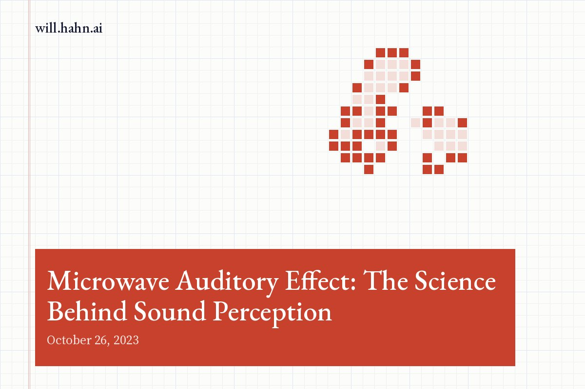

Microwave Auditory Effect: The Science Behind Sound Perception

In a world where technology often mirrors the stuff of science fiction, there's one field that truly stands out: psychotronics. As a combination of psychology and electronics, psychotronics is a frontier that has captivated scientists, researchers, and curious minds alike for decades. However, its core technology—the microwave auditory effect, or the so-called "Frey effect"—may just be its most enigmatic piece. This technology, first discovered in 1961, provides a fascinating case study of the collision of neuroscience and engineering.
A Tale of Discovery: Allan H. Frey and His Groundbreaking Research The microwave auditory effect was named after the American neuroscientist Allan H. Frey, who made the astonishing discovery while working at the General Electric's Advanced Electronics Center at Cornell University in 1961. Intriguingly, Frey's research was initially not related to sound perception at all. In fact, he was primarily focused on radar technology. His focus shifted due to an incidental observation during his research: he began to hear clicking sounds, somewhat like those produced by a Geiger counter, but there was no obvious source for these noises.
Clicks From Thin Air: The Microwave Auditory Effect Frey realized these clicks were not mechanical or hallucinatory, but instead produced by microwave pulses. Even when he was standing several hundred feet away from the radar, he could still hear the same clicking sounds. Most interestingly, the effect bypassed the external ear—Frey was still able to perceive these sounds even when his ears were blocked. It seemed like the microwaves were interacting directly with his brain to create the sensation of sound.
This was the birth of the microwave auditory effect, also known as the Frey effect: the phenomenon where short pulses of microwave radiation, when aimed at a person's head, can produce sounds inside their skull. This discovery challenged the then-known limits of human perception and opened up a new realm of scientific inquiry.
Demystifying the Phenomenon: The Mechanism of the Frey Effect But how does the Frey effect actually work? It appears to be related to a phenomenon known as "thermoelastic expansion". Microwave pulses, when they hit an object, can induce a rapid increase in temperature. This heating effect can cause expansion and contraction in brain tissues, leading to a pressure wave that travels through the skull and reaches the inner ear. Here, the pressure wave gets transformed into neural signals that the brain interprets as sound.
To put it in simpler terms, imagine throwing a pebble into a still pond. The pebble, akin to the microwave pulse, creates ripples—the pressure wave—that travel across the surface of the pond. Once they reach the edge—the inner ear—they create an effect, which in our analogy, would be the perceived sound.
Psychotronics: A Journey Forward Since Frey's groundbreaking discovery, psychotronics has evolved to encompass a variety of research areas, including neuroscience, electrical engineering, and even quantum mechanics. It promises to uncover new possibilities in understanding the human mind and its interaction with technology. For instance, it could potentially lead to new forms of communication that bypass conventional auditory channels or innovative therapies for hearing disorders.
While psychotronics may still feel like the realm of science fiction, it is rooted in science fact—robust experiments, meticulous observations, and ground-breaking discoveries like the Frey effect. As we continue to delve into this complex field, who knows what other fascinating phenomena we may yet unearth?
A Tale of Discovery: Allan H. Frey and His Groundbreaking Research The microwave auditory effect was named after the American neuroscientist Allan H. Frey, who made the astonishing discovery while working at the General Electric's Advanced Electronics Center at Cornell University in 1961. Intriguingly, Frey's research was initially not related to sound perception at all. In fact, he was primarily focused on radar technology. His focus shifted due to an incidental observation during his research: he began to hear clicking sounds, somewhat like those produced by a Geiger counter, but there was no obvious source for these noises.
Clicks From Thin Air: The Microwave Auditory Effect Frey realized these clicks were not mechanical or hallucinatory, but instead produced by microwave pulses. Even when he was standing several hundred feet away from the radar, he could still hear the same clicking sounds. Most interestingly, the effect bypassed the external ear—Frey was still able to perceive these sounds even when his ears were blocked. It seemed like the microwaves were interacting directly with his brain to create the sensation of sound.
This was the birth of the microwave auditory effect, also known as the Frey effect: the phenomenon where short pulses of microwave radiation, when aimed at a person's head, can produce sounds inside their skull. This discovery challenged the then-known limits of human perception and opened up a new realm of scientific inquiry.
Demystifying the Phenomenon: The Mechanism of the Frey Effect But how does the Frey effect actually work? It appears to be related to a phenomenon known as "thermoelastic expansion". Microwave pulses, when they hit an object, can induce a rapid increase in temperature. This heating effect can cause expansion and contraction in brain tissues, leading to a pressure wave that travels through the skull and reaches the inner ear. Here, the pressure wave gets transformed into neural signals that the brain interprets as sound.
To put it in simpler terms, imagine throwing a pebble into a still pond. The pebble, akin to the microwave pulse, creates ripples—the pressure wave—that travel across the surface of the pond. Once they reach the edge—the inner ear—they create an effect, which in our analogy, would be the perceived sound.
Psychotronics: A Journey Forward Since Frey's groundbreaking discovery, psychotronics has evolved to encompass a variety of research areas, including neuroscience, electrical engineering, and even quantum mechanics. It promises to uncover new possibilities in understanding the human mind and its interaction with technology. For instance, it could potentially lead to new forms of communication that bypass conventional auditory channels or innovative therapies for hearing disorders.
While psychotronics may still feel like the realm of science fiction, it is rooted in science fact—robust experiments, meticulous observations, and ground-breaking discoveries like the Frey effect. As we continue to delve into this complex field, who knows what other fascinating phenomena we may yet unearth?
New essays also go out by email. Subscribe on Substack.